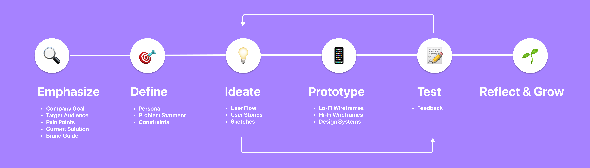
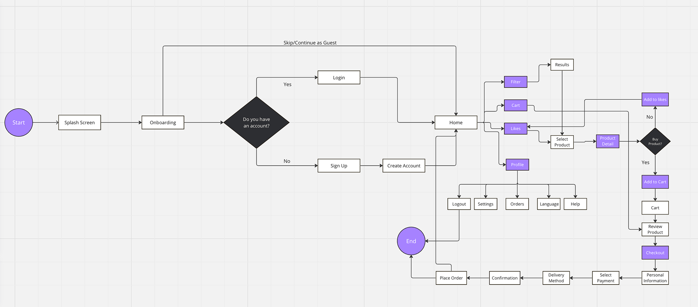
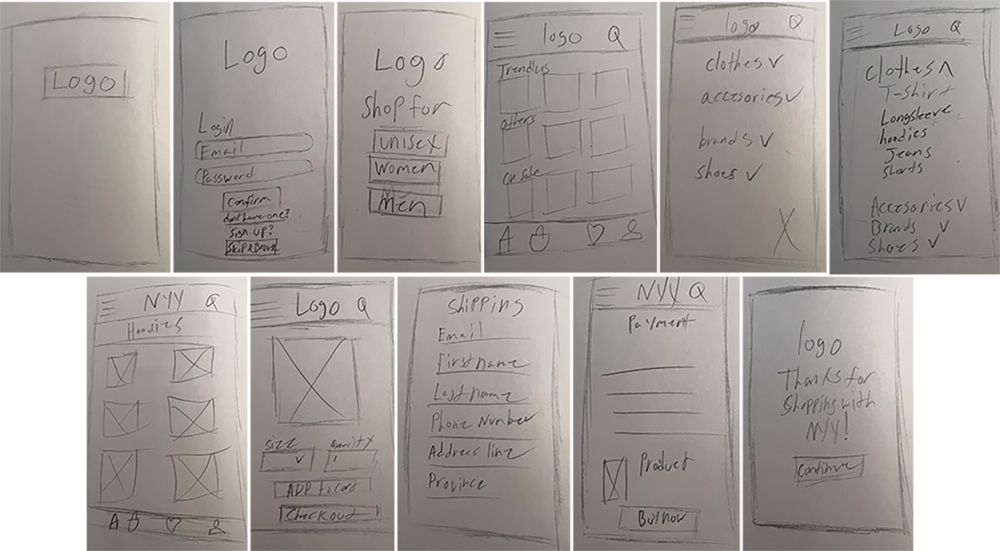
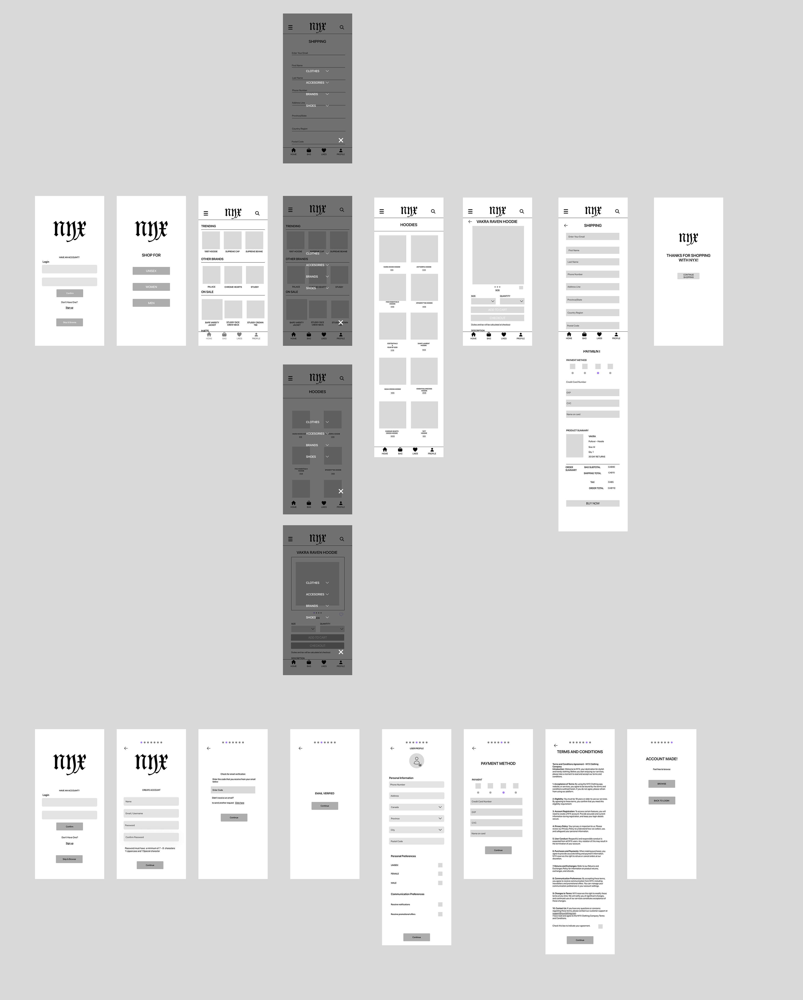
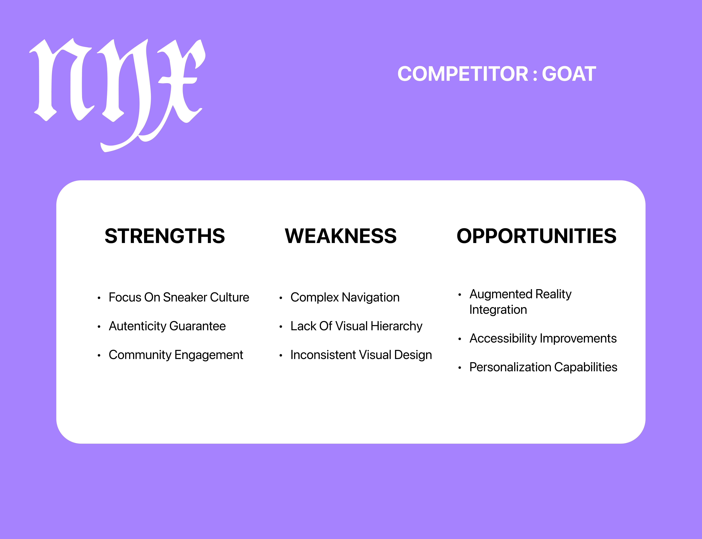

NYX
Crafted for fashion enthusiasts, this e-commerce app prioritizes a seamless, user-friendly interface. Explore an extensive array of features designed to enhance your shopping experience.
The mobile fashion wear e-commerce app, embodies elegance and convenience. Immerse yourself in a seamless, user-friendly interface, offering an extensive collection of trendy apparel.
Timeline: 2 weeks
Role: UXUI Designer
Platform: Figma
-
Problem
• Nyx sells clothing from other known retail designer brands, that has a large user base. However, most clothing e-commerce apps have cluttered interfaces that are difficult to navigate and the design does not align with the internet usage of the gen-z audience.
-
Solution
• Working on this project as a UXUI designer. I designed the app to make it fit the expectation of the gen-z audience through three rounds of wireframing, prototyping and user-testing. I deliverd a fullset of UXUI designs together with an expandable design system. My design led to a 15% improvement in user satisfaction rate.
-
Target Audience
•Fashion enthusiasts individuals passionate about staying on-trend and exploring new fashion styles. They actively seek unique and expressive clothing choices.
Social media influencers Individuals active on social platforms, looking for curated fashion pieces to showcase online. They prioritize visually appealing and Instagram-worthy fashion items. -
Pain Points
•Inefficient search experience difficulty in finding specific items due to inefficient search filters or cluttered navigation interfaces.
•Concerns about size accuracy and fit when purchasing online, leading to uncertainty and potential returns.
Process
User Persona's


User Flow
Design Process
Rapid Prototyping
Low Fidelity Wireframes
Competitor Analysis
Competitive analysis is a strategic business process that involves identifying, evaluating, and understanding the strengths and weaknesses of competitors in a particular market or industry.

-
User Journey Goal 1
The client will be able to quickly browse without logging in, he will then use the hamburger menu and go to hoodies section. you will find a hoodie from the company VAKRA that is a full Pullover Hoodie He will then proceed to fill out personal information for the checkout process.
-
User Journey Goal 2
The Client will be attempting to make an account, you will make a email/username and password, then verify your email. after verifying you will input his personal information, shopping preferences, and communication preferences.
The Final Deliverables
Onboarding Screen

Explore Page

Checkout

The Final Results
-
Intuitive Navigation
The app boasts intuitive navigation pathways, allowing users to effortlessly browse through the diverse range of clothing collections.
-
Accessibility Considerations
Use of high color contrast, appropriate text size and fonts to ensure readability and important elements are easily distinguishable for users with visual color blindness.
Incorporate voice search and alt text into images, to access the content through screen readers.
-
Enhanced User Experience
From simplified registration processes to personalized recommendations, every interaction within the app is meticulously crafted to enhance user satisfaction and drive engagement.
-
Reflection
During the project for NYX, I delved deep into the intricacies of user experience. This has helped hone my skills in Figma. I realized the paramount importance of attention to detail.
Elements such as spacing, alignment, contrast, and icon sizes may appear insignificant at first glance, yet they wield immense influence over users' perceptions of the app.
Style Guide